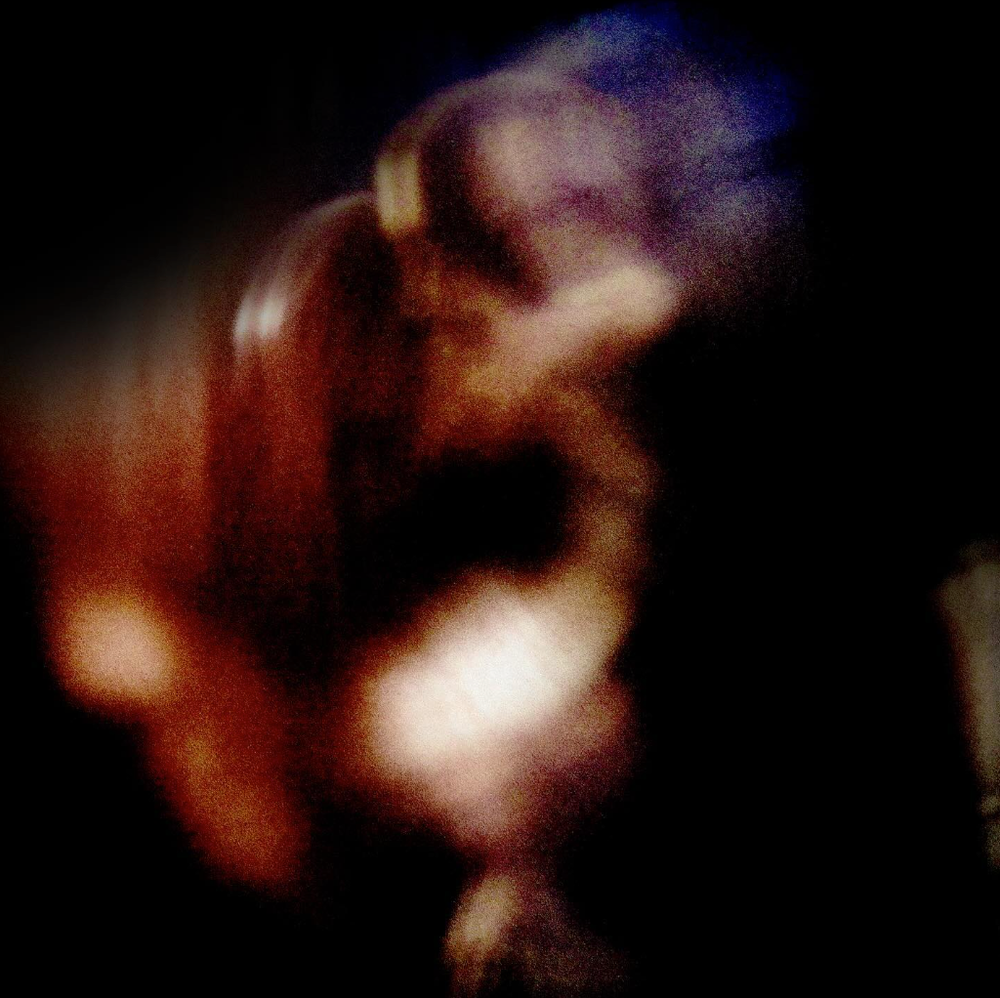
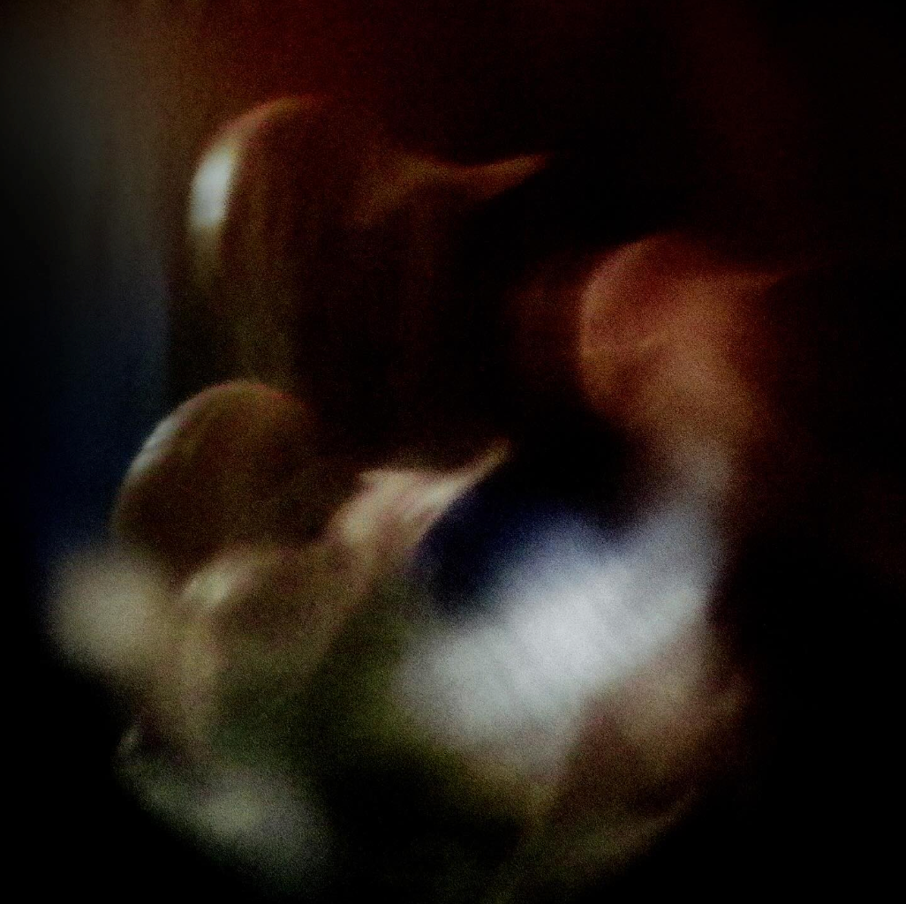
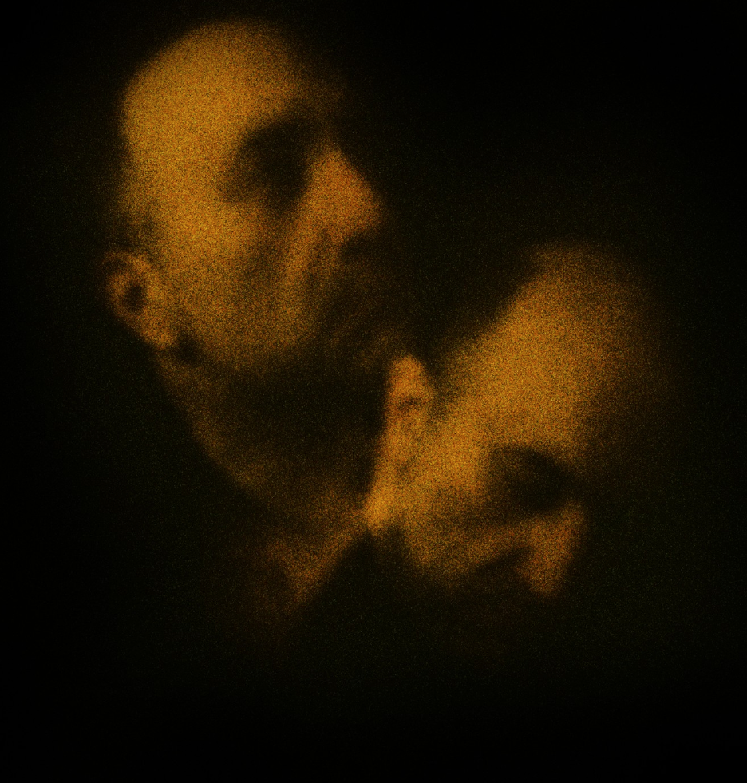

2026 — 10th Annual CCAN
Center for Contemporary Arts National (CCAN), Abilene, TX, 10-10-26· view exhibition ↗

I create work where action, speed of movement, and thought dominate the subject of my artwork. I document dynamic performances using various techniques to create source material for much of my work. The completed work is composed of a narrative that depicts motion in two-dimensional images.
selected work





exhibitions
2025 — Ethereal
Glasgow Gallery of Photography, Glasgow, UK · gallery ↗
Glasgow Gallery of Photography, Glasgow, UK · gallery ↗
2025 — Unseen Forces
T Mari Gallery, Chicago, IL · gallery ↗
T Mari Gallery, Chicago, IL · gallery ↗
2025 — Uncanny
IU Kokomo Art Gallery · exhibition ↗
IU Kokomo Art Gallery · exhibition ↗
2025 — Wild at Heart and Weird on Top: For David Lynch
The Lab on Santa Fe, Denver, CO
The Lab on Santa Fe, Denver, CO
2025 — Oops! Unfortunately...
A Space Gallery, Brooklyn, NY
A Space Gallery, Brooklyn, NY
2025 — fotofoto Gallery 20th National Show
fotofoto Gallery
fotofoto Gallery
2023 — INTERSTATE: Where I-90 Meets I-82
Sarah Spurgeon Gallery, Central Washington University · gallery tour ↗
Sarah Spurgeon Gallery, Central Washington University · gallery tour ↗
2021 — Luminosity
Cultural Center of Cape Cod · exhibition ↗
Cultural Center of Cape Cod · exhibition ↗
2001 — Unbecoming
Soil Gallery, Seattle · Seattle Times review ↗
Soil Gallery, Seattle · Seattle Times review ↗
press + recognition
2025 — Fine Art Photography Awards
Nomination, Experimental category
Nomination, Experimental category
2024 — Chromatic Awards
Honorable Mention, Fine Art · view award ↗
Honorable Mention, Fine Art · view award ↗
2023 — Creative Quarterly #71
Two works published in Fine Art · view issue ↗
Two works published in Fine Art · view issue ↗
2020 — The MacGuffin
Volume 36 No. 3
Volume 36 No. 3
2020 — Aleola Journal of Poetry and Art
Issue #4
Issue #4
2001 — The Seattle Times
Sheila Farr, “Rethinking what's beautiful and beastly,” reviewing Unbecoming
Sheila Farr, “Rethinking what's beautiful and beastly,” reviewing Unbecoming
about
Nicholas D’Angelo is an artist and photographer whose work explores action, movement, the body, and psychological states. Working across photography, performance, and digital processes, he creates ethereal images that exist between physical presence and abstraction.
D’Angelo earned a B.A. in Studio Art from Montclair State University and an M.F.A. in Painting and 2D Design from Cranbrook Academy of Art. His work has been exhibited nationally and internationally, including at Sarah Spurgeon Gallery, Soil Art Gallery, T Mari Gallery, IU Kokomo Art Gallery, and Glasgow Gallery of Photography.
contact
nick@nicksfriends.comdownload CV ↗